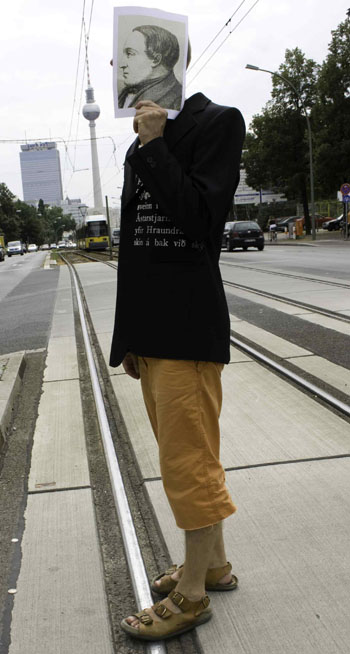
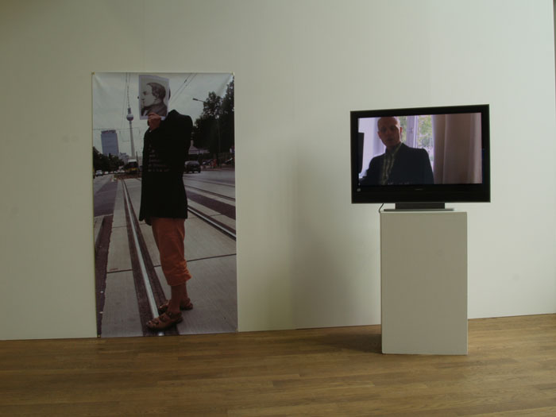

|
|
|
Skyldi' ég vera þetta sjálfur
Í tilefni af 200 ára fæðingarafmæli Jónasar Hallgrímssonar var opnuð samsýning 21 myndlistarmanns í Ketilhúsinu í Listagilinu á Akureyri laugardaginn 25. ágúst kl. 14.00. Bar hún yfirskriftina "Skyldi' ég vera þetta sjálfur". Jónas er kveikjan að öllum verkum sýningarinnar og verður fjölbreytt flóra myndlistarmanna sem eiga við hann samtal. Sýningarstjóri er Þórarinn Blöndal. Sýninginn stóð framyfir afhendingu Sjónlistarverðlaunanna 2007 sem fór fram á Akureyri 21. til 23. september.
|
Eftirtaldir listamenn tóku þátt í sýningunni:
Aðalheiður S. Eysteinsdóttir
Arna Valsdóttir
Áslaug Thorlacius
Birgir Snæbjörn Birgisson
Finnur Arnar
Hanna Hlíf Bjarnadóttir
Helgi Þórsson
Hlynur Hallsson
Hulda Hákonardóttir
Ilmur Stefánsdóttir
Jón Garðar Henrysson
Jón Laxdal
Jón Sæmundur Auðarson
Jóna Hlíf Halldórsdóttir
Jónas Viðar
Joris Rademaker
Megas
Margrét Blöndal
Pálína Guðmundsdóttir
Ragnar Kjartansson
Þorvaldur Þorsteinsson
|
 |
 Mynd: Þórarinn Blöldal |